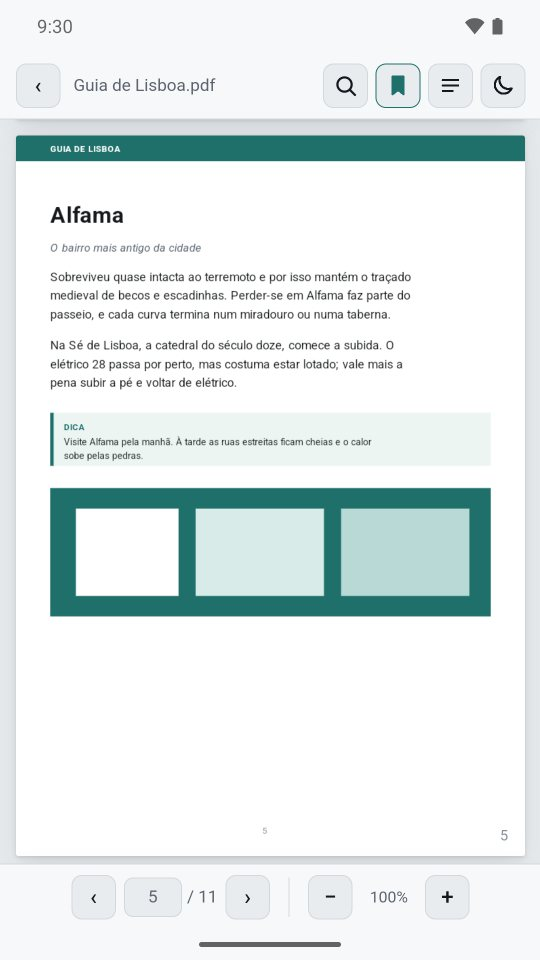
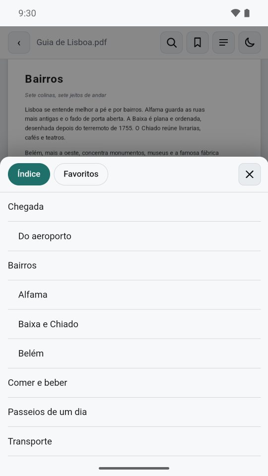
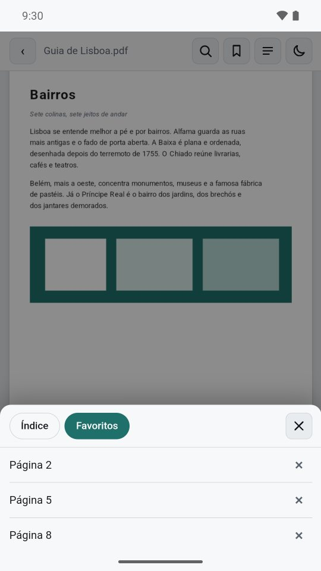
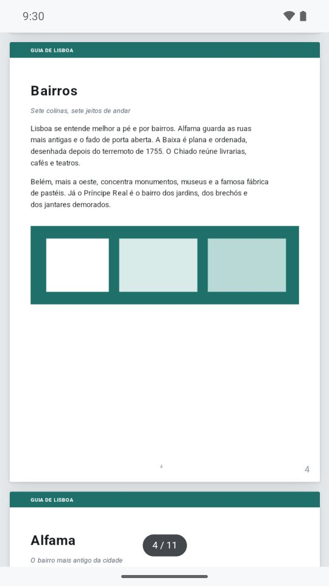

Leitor de PDF para o celular
Abra o PDF e leia. Só isso.
Busca, índice, favoritos e modo escuro, sem anúncios, sem cadastro e sem pedir nenhuma permissão. Seus documentos ficam no seu celular e não vão para lugar nenhum.
- Grátis
- Sem anúncios
- Zero permissões
- Funciona sem internet

Tudo o que um leitor precisa, nada que atrapalhe.
Capturas do app de verdade, rodando no Android. Arraste para o lado para ver todas.






7 telas · arraste para o lado →
Feito para quem só quer ler.
Manuais, contratos, livros, receitas, material de estudo: tudo o que chega em PDF.
Leia do jeito que preferir
- Rolagem contínua, com páginas nítidas mesmo em zoom alto
- Zoom com pinça, com os botões + e − ou com toque duplo
- Lembra a página onde você parou em cada arquivo
- Um toque esconde as barras; a tela não apaga enquanto você lê
Encontre o que precisa
- Busca no texto que ignora acentos e maiúsculas
- Resultados destacados na página, com navegação entre eles
- Índice do próprio PDF, com capítulos e seções
- Favoritos para as páginas que você mais consulta
Conforto para ler à noite
- Modo escuro do documento, liga e desliga com um toque
- Interface que acompanha o tema claro ou escuro do celular
Abre seus arquivos de qualquer lugar
- Toque num PDF no gerenciador de arquivos, no WhatsApp ou no e-mail e escolha o Leitor de Bolso
- Pode virar o leitor padrão do "Abrir com" do Android
- Abre PDF protegido por senha, sem guardar a senha
Privacidade de verdade, não de rodapé.
O Leitor de Bolso desenha o PDF no próprio aparelho. Nenhum conteúdo do arquivo sai do celular, e o app não executa scripts embutidos em PDFs. Ler a política completa
- Dados coletados
- NenhumSem conta, sem análise, sem anúncios.
- Permissões do Android
- 0Nem internet, nem armazenamento.
- O que fica no aparelho
- Cópia dos últimos 8 PDFsMais a página lida, os favoritos e a escolha do modo escuro. Você apaga quando quiser.
- Senha de PDF protegido
- Nunca é guardadaUsada só para abrir; ao reabrir, o app pede de novo.
- Desinstalar
- Apaga tudo
Instale de graça.
No Android, o app vira o "Abrir com" padrão. No iPhone e no computador, ele roda pelo navegador e, depois de instalado, abre sem internet.
Android
- Baixe e instale o app.
- Segure um PDF no gerenciador de arquivos → Abrir com → Leitor de Bolso → Sempre.
- Pronto: todo PDF abre nele.
iPhone
- Abra o endereço do app no Safari.
- Toque em Compartilhar → Adicionar à Tela de Início.
- O ícone fica junto dos outros apps e abre sem internet.
Computador
- Abra o endereço do app no Chrome ou no Edge.
- Clique em Instalar na barra de endereço.
- Arraste um PDF para a janela para abrir.
Perguntas rápidas
É grátis mesmo?
É. Sem anúncios e sem cadastro.
Precisa de internet?
Não. O app para Android nem pede permissão de internet. A versão para navegador só precisa de internet na primeira abertura; depois funciona sem ela.
Consigo grifar, anotar ou assinar o PDF?
Ainda não. Por enquanto o Leitor de Bolso é para ler: anotações, grifos, formulários e assinatura ficam para versões futuras.
Ele guarda cópia dos meus arquivos?
Guarda uma cópia dos últimos 8 PDFs abertos, só no armazenamento privado do app, para a lista de recentes. Cada item tem um ×, "Limpar lista" apaga tudo, e desinstalar o app também.
Abre PDF com senha?
Abre. O app pede a senha, avisa se estiver errada e não guarda a senha em lugar nenhum.